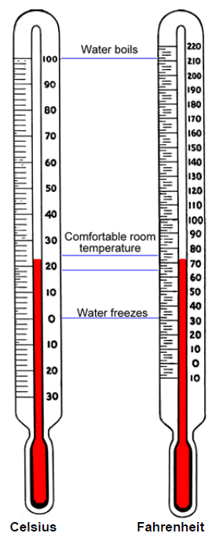

Chapter 3: Measurements & Conversions
Section 3.6: Temperature Scales
Learning Objective(s)
- State the freezing and boiling points of water on the Celsius and Fahrenheit temperature scales.
- Convert from one temperature scale to the other using conversion formulas.
Introduction
Turn on the television any morning and you will see meteorologists talking about the day's weather forecast. In addition to telling you about conditions like sun, clouds, or rain, they also tell you the forecast high and low temperatures. A hot summer day may reach 100° in Philadelphia, while a cool spring day may have a low of 40° in Seattle.
If you have been to other countries, though, you may notice that meteorologists measure heat and cold differently outside of the United States. For example, a TV weatherman in San Diego may forecast a high of 89°, but a similar forecaster in Tijuana, Mexico — only 20 miles south — may look at the same weather pattern and say the day's high temperature will be 32°. What's going on here?
The difference is that the two countries use different temperature scales. In the United States, temperatures are usually measured using the Fahrenheit scale, while most countries that use the metric system use the Celsius scale. Learning about both scales — including how to convert between them — will help you figure out what the weather is going to be like no matter which country you find yourself in.
Measuring Temperature on Two Scales
Fahrenheit and Celsius are two different scales for measuring temperature. The image below shows a Celsius thermometer reading 22°C alongside a Fahrenheit thermometer reading 72°F — both representing a comfortably warm room temperature.

Celsius vs. Fahrenheit — Key Facts
| Reference Point | Celsius (°C) | Fahrenheit (°F) |
|---|---|---|
| Water freezes | 0° | 32° |
| Water boils | 100° | 212° |
| Comfortable room temperature | 18°C – 24°C | 65°F – 75°F |
| Cold winter day (e.g. Michigan) | −18° | 0° |
| Hot summer day (e.g. Arizona) | 43° | 110° |
Self Check A
A cook puts a thermometer into a pot of water to see how hot it is. The thermometer reads 132°, but the water is not boiling yet. Which temperature scale is the thermometer measuring?
Fahrenheit. Water boils at 212° on the Fahrenheit scale, so a reading of 132°F is legitimately hot but not yet boiling. On the Celsius scale, water boils at 100°, so a reading of 132°C would already be past the boiling point — impossible for non-boiling water.
Converting Between the Scales
By looking at the two thermometers, you can make some general comparisons. Many people tend to be comfortable in outdoor temperatures between 50°F and 80°F (or 10°C and 25°C). If a meteorologist predicts 0°C (32°F), it is a safe bet you will need a winter jacket.
Sometimes it is necessary to convert a Celsius measurement to its exact Fahrenheit equivalent or vice versa. Converting temperature between the systems is straightforward as long as you use the correct formulas. These formulas were developed by comparing the two scales:
- The freezing point is 0° on Celsius and 32° on Fahrenheit — so we subtract 32 when converting from Fahrenheit to Celsius, and add 32 when converting from Celsius to Fahrenheit.
- There are 100 degrees between freezing and boiling on Celsius, and 180 degrees between the same points on Fahrenheit. The ratio \(\dfrac{180}{100} = \dfrac{9}{5}\) explains the fractions in the formulas.
Temperature Conversion Formulas
Fahrenheit to Celsius:
\[C = \frac{5}{9}(F - 32)\]Celsius to Fahrenheit:
\[F = \frac{9}{5}C + 32\]Example 1
The boiling point of water is 100°C. What temperature does water boil at on the Fahrenheit scale?
Solution
A Celsius temperature is given, so use the formula \(F = \dfrac{9}{5}C + 32\). Substitute \(C = 100\):
\[F = \frac{9}{5}(100) + 32 = \frac{900}{5} + 32 = 180 + 32 = 212\]The boiling point of water is 212°F.
Example 2
Water freezes at 32°F. On the Celsius scale, what temperature is this?
Solution
A Fahrenheit temperature is given, so use the formula \(C = \dfrac{5}{9}(F - 32)\). Substitute \(F = 32\):
\[C = \frac{5}{9}(32 - 32) = \frac{5}{9}(0) = 0\]The freezing point of water is 0°C.
Example 3
Two scientists are doing an experiment to identify the boiling point of an unknown liquid. One scientist gets a result of 120°C; the other gets a result of 250°F. Which temperature is higher, and by how much?
Solution
One temperature is in °C and the other is in °F. To compare them we need both on the same scale. Convert 120°C to °F using \(F = \dfrac{9}{5}C + 32\):
\[F = \frac{9}{5}(120) + 32 = \frac{1{,}080}{5} + 32 = 216 + 32 = 248°\text{F}\]Now compare on the Fahrenheit scale:
\[250°\text{F} - 248°\text{F} = 2°\text{F}\]250°F is the higher temperature, by 2°F.
Note: you could also convert 250°F to Celsius instead. Doing so gives \(250°\text{F} = 121.1°\text{C}\), which is 1.1°C higher than 120°C — consistent with the answer above. Whichever direction you convert, always compare within the same scale.
Self Check B
Tatiana is researching vacation destinations and sees that the average summer temperature in Barcelona, Spain is around 26°C. What is the average temperature in degrees Fahrenheit?
Use the formula \(F = \dfrac{9}{5}C + 32\) with \(C = 26\):
\[F = \frac{9}{5}(26) + 32 = \frac{234}{5} + 32 = 46.8 + 32 = 78.8°\text{F}\]The average summer temperature in Barcelona is approximately 79°F.
Summary
Temperature is often measured using one of two scales: Celsius or Fahrenheit. On the Celsius scale, water freezes at 0° and boils at 100°. On the Fahrenheit scale, water freezes at 32° and boils at 212°. You can convert between the two scales using the formulas \(F = \dfrac{9}{5}C + 32\) and \(C = \dfrac{5}{9}(F - 32)\). When comparing temperatures given in different scales, always convert to a common scale before drawing conclusions.